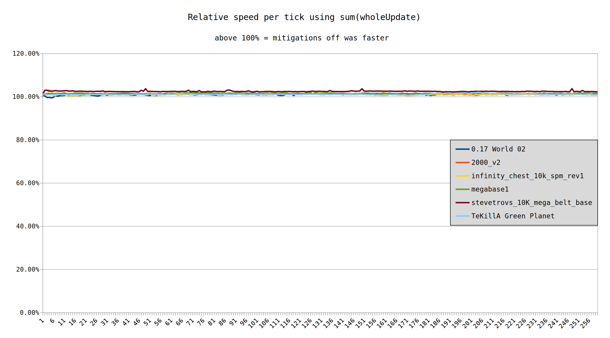
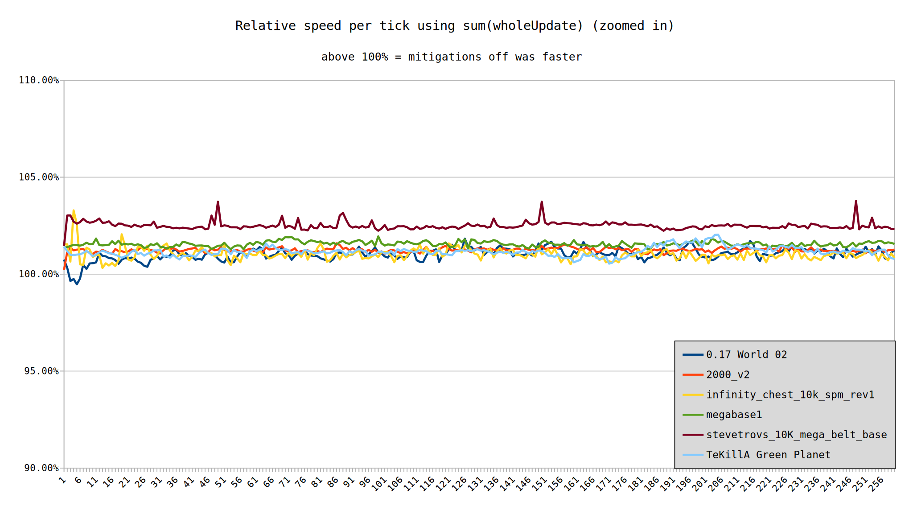
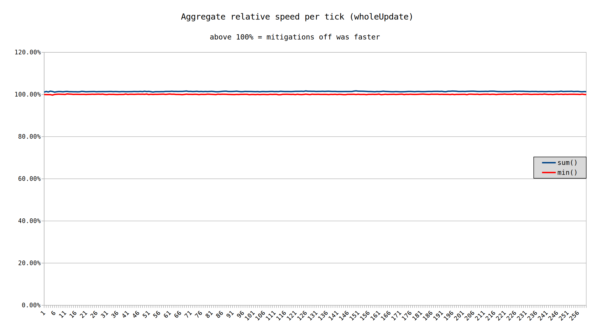
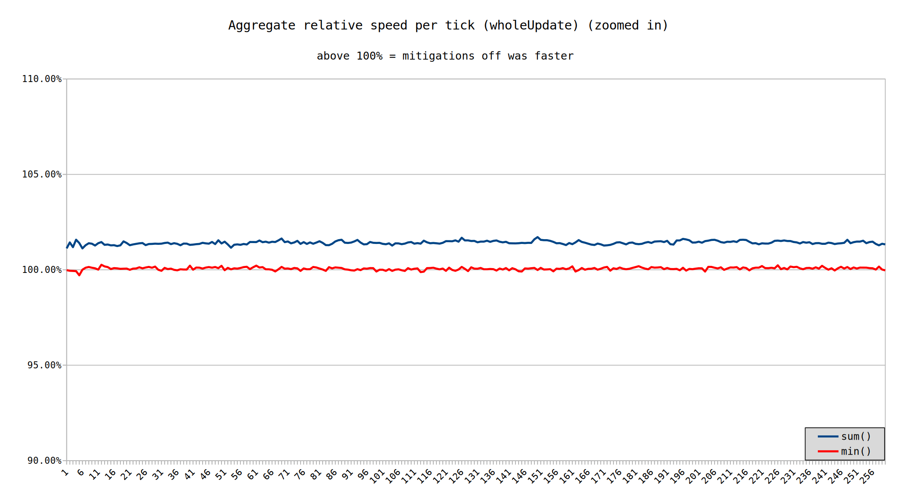

Performance of Factorio in typical conditions has slowed by roughly 1%. Best case scenario performance is identical, but achieving that best case scenario in practice is not possible.
In January 2018, we first learned of Spectre and Meltdown, two vulnerabilities affecting Intel processors. Since that time, we have learned of the existence of several more vulnerabilities affecting Intel processors. With each of these vulnerabilities, mitigations must be applied to secure the system against attackers. In certain workloads, these mitigations have been shown to have a significant performance cost. The question remains if Factorio is one such workload.
To test the impact of Intel CPU vulnerabilities, we will pass the mitigations=off parameter to the Linux kernel at boot time. The spectre-meltdown-checker was used to verify mitigations were disabled. Testing was done on a Haswell i5-4670k, it is possible that other Intel CPUs would be impacted differently than this one.
Six maps were chosen that represent a variety of possible build styles and capacities. Each of these 6 maps was benchmarked 100 times, using the verbose benchmark, thereby collecting per tick timings. These 100 runs were benchmarked with mitigations off, as well as with mitigations on, for a total of 200 runs. Each map was benchmarked for 260 ticks. The intent of this test is not to compare each of these designs with one another, so this short and inconsiderate duration is fine.
Each of the six maps is available for download at these locations:
Care should be given to deciding which metrics to use. Typically for our tests, the min(wholeUpdate) metric is used. Fundamentally, this metric looks at each tick across all benchmark runs, and returns the fastest instance of each tick. Since Factorio is deterministic, any time slower than the fastest could be assumed to be interference by other programs running on the system. This is not an average, rather it is an idealized best case scenario. This works well for measuring similar designs, especially in cases where there is a slim difference, as we want to suppress noise introduced by unrelated programs.
In practice, it is not possible to play the game without these micro interruptions from the operating system. If mitigations affect these system level interruptions, but do not affect the best case scenario path, then using min(wholeUpdate) will conceal that data. Therefore, we will also use sum(wholeUpdate). For each tick, every duration taken will be included. The sums of these ticks will be compared with mitigations on and off.
Kicking things of with min(wholeUpdate), we can see that as predicted, the idealized best case scenario shows effectively no difference between vulnerable and mitigated configurations.
 Moving on to sum(wholeUpdate), we can see that there is a measurable and real penalty to turning mitigations on. Stevetrov's map is more affected than others, however the reason for such effects is unknown. Speculatively, it could be that the map is closer to the hardware limitations, thereby each interruption is more costly.
 Averaging all maps together cleans up the line spam and shows that turning mitigations off resulted in 1.42% more performance on average. Conversely, looking at min() showed only a 0.06% speedup. This validates that using min() is a good option when the operating system should be removed as a factor.
Intel's security flaw mitigations do have an measurable though small performance impact for Factorio. Or more specifically, Intel's security mitigations slow the operating system's interruptions slightly. Since an operating system is required to play the game, this is an unavoidable cost.
Since this testing was conducted with all user programs closed, it's possible that in common scenarios like watching a video or listening to music, a larger performance impact due to the mitigations could be measured. A challenge with testing this is the variability, and thus this should be dedicated towards its own test.